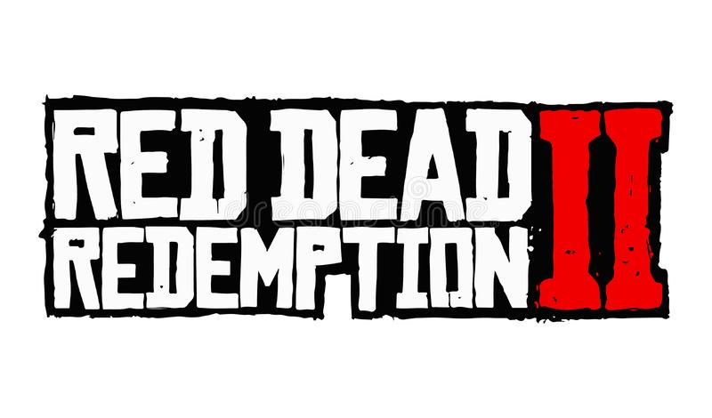

Bienvenidos a Red Dead Redemption 2
Red Dead Redemption 2 es un videojuego de acción y aventura desarrollado y publicado por Rockstar Games. Es la precuela del juego de 2010, Red Dead Redemption. El juego tiene lugar en 1899, en un mundo ficticio inspirado en el Salvaje Oeste americano.
Historia de Red Dead Redemption 2
El juego sigue la historia de Arthur Morgan, un miembro de la banda de forajidos Van der Linde, liderada por Dutch van der Linde. La banda se ve obligada a huir después de un atraco fallido en la ciudad de Blackwater y debe luchar para sobrevivir en un mundo cada vez más hostil. A lo largo del juego, Arthur debe enfrentarse a decisiones difíciles y consecuencias mortales mientras lucha por proteger a su familia elegida de los peligros del Salvaje Oeste.
El juego también cuenta con un modo multijugador en línea, Red Dead Online, que permite a los jugadores crear y personalizar su propio personaje y explorar el mundo del juego con otros jugadores.
Personajes de Red Dead Redemption 2
- Arthur Morgan
- Dutch van der Linde
- John Marston
- Sadie Adler
- Javier Escuella
- Charles Smith
- Bill Williamson
- Abigail Roberts
- Jack Marston